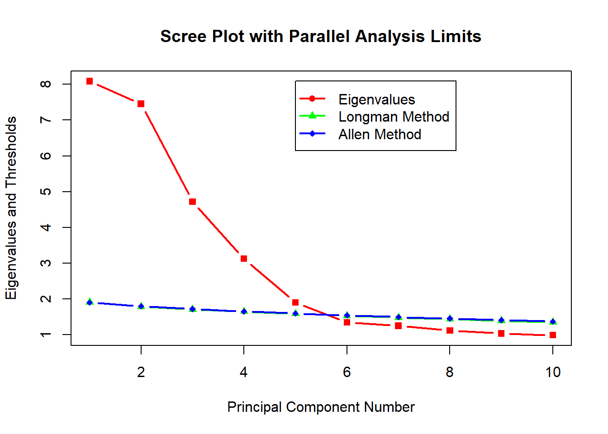

As our first multivariate analysis method, we will use factor analysis to identify underlying factors causing correlations between our various statistics. We will consider the suitability of the data, determine an appropriate number of factors using PCA, and complete factor analysis itself with principal axis factoring and a varimax rotation.
First, to use our data for factor analysis, we must remove all non-numerical values like team name and conferece. Then, to confirm the suitability of our data for factor analysis, we will consider the pairwise correlations between variables. Looking at the raw correlations (the bottom left of the correlation plot), these variables may initially seem too uncorrelated, with a large percentage of the values around \(0.1\) and \(0.2\). However, we still see a fair amount of high correlations such as the \(0.89\) correlation between efficiency and points. This makes sense, as offensive efficiency probably leads to more points, and vice versa (in fact, points scored is a part of the calculation for the offensive efficiency statistic). Most of the high and medium correlations are similarly logical but can still lead to interesting conclusions, such as the \(0.47\) correlation between flagrant fouls and opponent flagrant fouls (an unfortunate reflection of vengeance between aggressive teams). On the other hand, some of them are less expected and maybe even unexplainable, like the \(-0.77\) correlation between opponent blocked attempts and seed.
While the raw correlation plot may be slightly concerning for factor analysis, a look at the visual correlation plot demonstrates a reasonable level of viability for dimensional reduction techniques. We see clusters of very high correlations, implying a high level of suitability for factor analysis, as each group probably has a latent factor driving these correlations. Furthermore, there are a few potentially unexpected relationships, like the high correlation between points and opponent points; thus, our factor analysis could still be exploratory in the sense of discovering new patterns beyond those previously hypothesized. This apparent viability is confirmed by our Kaiser-Meyer-Olkin measure of adequacy, which is approximately \(0.80\). According to our spectrum from class, this is squarely in the “Meritorious” region and hence implies our data is very suitable for factor analysis. Notably, achieving this value took a good deal of experimenting in terms of the chosen indicators—it was initially in the “Miserable” category and feeling quite inadequate :(—but was not achieved by any unreasonable inclusions; instead, it just forced our data into a large, comprehensive set of variables.
As the first step of our factor analysis, we will use principal components to determine an appropriate number of latent factors. While we use different methods to categorize our data in the factor analyses below, PCA will still give us a good idea of how many dimensions are needed to capture the variability of our data.
To start, we perform the process of PCA using the princomp function on the correlation matrix. Printing out the summary of results, we see that the first \(5\) components have eigenvalues substantially over \(1\) and encompass about \(63\%\) of the total variance, with the following components/eigenvalues (\(6\)-\(11\)) hovering around \(1\) and raising the cumulative variance proportion to about \(80\%\). Choosing the number of components to keep is quite difficult due to this flattening out at relatively high eigenvalues, so we will also consider other methods.
## Importance of components:
## Comp.1 Comp.2 Comp.3 Comp.4 Comp.5 Comp.6
## Standard deviation 2.84357 2.72961 2.17219 1.768024 1.379470 1.159008
## Proportion of Variance 0.20215 0.18627 0.11796 0.078148 0.047573 0.033583
## Cumulative Proportion 0.20215 0.38842 0.50638 0.584523 0.632097 0.665679
## Comp.7 Comp.8 Comp.9 Comp.10 Comp.11 Comp.12
## Standard deviation 1.11821 1.055722 1.017937 0.994721 0.97468 0.87955
## Proportion of Variance 0.03126 0.027864 0.025905 0.024737 0.02375 0.01934
## Cumulative Proportion 0.69694 0.724803 0.750708 0.775444 0.79919 0.81853
## Comp.13 Comp.14 Comp.15 Comp.16 Comp.17 Comp.18
## Standard deviation 0.873475 0.793278 0.766266 0.717015 0.704961 0.690017
## Proportion of Variance 0.019074 0.015732 0.014679 0.012853 0.012424 0.011903
## Cumulative Proportion 0.837609 0.853341 0.868020 0.880873 0.893297 0.905200
## Comp.19 Comp.20 Comp.21 Comp.22 Comp.23 Comp.24
## Standard deviation 0.673113 0.657744 0.6039644 0.6017222 0.5312440 0.519422
## Proportion of Variance 0.011327 0.010816 0.0091193 0.0090517 0.0070555 0.006745
## Cumulative Proportion 0.916527 0.927343 0.9364620 0.9455137 0.9525692 0.959314
## Comp.25 Comp.26 Comp.27 Comp.28 Comp.29
## Standard deviation 0.5002090 0.4445184 0.4289705 0.4163068 0.3798478
## Proportion of Variance 0.0062552 0.0049399 0.0046004 0.0043328 0.0036071
## Cumulative Proportion 0.9655694 0.9705093 0.9751097 0.9794425 0.9830496
## Comp.30 Comp.31 Comp.32 Comp.33 Comp.34
## Standard deviation 0.3687957 0.330394 0.3080062 0.2985745 0.2775813
## Proportion of Variance 0.0034003 0.002729 0.0023717 0.0022287 0.0019263
## Cumulative Proportion 0.9864499 0.989179 0.9915506 0.9937793 0.9957055
## Comp.35 Comp.36 Comp.37 Comp.38 Comp.39
## Standard deviation 0.255425 0.2028722 0.19364728 0.1294454 0.09190426
## Proportion of Variance 0.001631 0.0010289 0.00093748 0.0004189 0.00021116
## Cumulative Proportion 0.997337 0.9983655 0.99930300 0.9997219 0.99993306
## Comp.40
## Standard deviation 5.1745e-02
## Proportion of Variance 6.6939e-05
## Cumulative Proportion 1.0000e+00## Eigenvalues## Comp.1 Comp.2 Comp.3 Comp.4 Comp.5 Comp.6 Comp.7 Comp.8 Comp.9 Comp.10
## 8.09 7.45 4.72 3.13 1.90 1.34 1.25 1.11 1.04 0.99
## Comp.11 Comp.12 Comp.13 Comp.14 Comp.15 Comp.16 Comp.17 Comp.18 Comp.19 Comp.20
## 0.95 0.77 0.76 0.63 0.59 0.51 0.50 0.48 0.45 0.43
## Comp.21 Comp.22 Comp.23 Comp.24 Comp.25 Comp.26 Comp.27 Comp.28 Comp.29 Comp.30
## 0.36 0.36 0.28 0.27 0.25 0.20 0.18 0.17 0.14 0.14
## Comp.31 Comp.32 Comp.33 Comp.34 Comp.35 Comp.36 Comp.37 Comp.38 Comp.39 Comp.40
## 0.11 0.09 0.09 0.08 0.07 0.04 0.04 0.02 0.01 0.00To clarify our results, we will make a scree plot of our principal components and overlay the Longman and Allen method values for parallel analysis. Following the pattern we observed directly, the scree plot flattens out after the \(6\)th principal component. This is also where it dips below the Longman and Allen method values, so this seems to be the most reasonable cutoff point. As a result we will keep \(5\) principal components and thus look for \(5\) latent factors in our factor analysis. Conveniently, this is a much more substantial and useful reduction in dimension compared to keeping \(10\) or \(11\) components, so we will be able to more easily plot and interpret our factor analysis results.
## pcompnum longman allen
## 1 1 1.9111 1.9021
## 2 2 1.7886 1.7977
## 3 3 1.7078 1.7203
## 4 4 1.6516 1.6546
## 5 5 1.5892 1.5967
## 6 6 1.5356 1.5431
## 7 7 1.4847 1.4972
## 8 8 1.4380 1.4553
## 9 9 1.3941 1.4126
## 10 10 1.3495 1.3733
Now, looking at the loadings for these first \(5\) components, most of them are quite low, and there are no strong interpretations of the components overall. However, the first component is vaguely focused on composite variables like RPI and strength of schedule, representing overall team quality. Meanwhile, the second component has highest loadings on opponent tournament statistics, implying good tournament competition (probably due to a low seed or a long tournament run). The third component is seemingly a measure of offensive efficiency, while the fourth and fifth components are very opaque. Overall, while not overly useful or definitive, these PCA results imply that our factor analysis, which does a similar dimensional reduction with rotations to produce a “nice story,” will yield insightful results.
| Comp.1 | Comp.2 | Comp.3 | Comp.4 | |
|---|---|---|---|---|
| efficiency | 0.1247 | 0.1283 | 0.3012 | 0.2429 |
| true_shooting_pct | 0.04114 | 0.1053 | 0.1982 | 0.3112 |
| points | 0.04905 | 0.1453 | 0.3734 | 0.09708 |
| assists | 0.08488 | 0.09742 | 0.2651 | 0.2203 |
| points_in_paint | 0.0185 | 0.1073 | 0.2573 | 0.09306 |
| second_chance_pts | 0.1191 | -0.02963 | 0.1627 | -0.05964 |
| blocked_att | 0.275 | 0.07665 | -0.05147 | -0.2159 |
| personal_fouls | -0.05297 | -0.06114 | 0.1791 | -0.2425 |
| flagrant_fouls | 0.1026 | 0.1327 | -0.1285 | -0.2228 |
| opp_true_shooting_pct | -0.1459 | 0.07855 | 0.2018 | -0.2331 |
| opp_points | -0.06613 | 0.1487 | 0.315 | -0.2407 |
| opp_assists | -0.02231 | 0.1132 | 0.1689 | -0.2592 |
| opp_points_in_paint | -0.06848 | 0.1105 | 0.2562 | -0.17 |
| opp_fast_break_pts | -0.002005 | 0.1707 | 0.04755 | -0.2219 |
| opp_blocked_att | 0.2929 | 0.05827 | -0.09529 | -0.1112 |
| opp_personal_fouls | 0.03322 | -0.075 | 0.1667 | -0.2018 |
| opp_flagrant_fouls | 0.1488 | 0.1216 | -0.1118 | -0.04543 |
| rpi | 0.2942 | 0.0554 | -0.02159 | 0.1498 |
| sos | 0.3118 | 0.0707 | -0.05165 | -0.1131 |
| owp | 0.3055 | 0.06781 | -0.04858 | -0.1016 |
| seed | -0.3123 | -0.074 | 0.02963 | -0.0658 |
| tourn_bid_num | -0.2093 | -0.06427 | 0.05212 | 0.2586 |
| conference_type_num | -0.2542 | -0.07321 | 0.05297 | 0.209 |
| log_tourn_games_played | 0.2379 | 0.03534 | -0.03119 | 0.1474 |
| tourn_point_diff | 0.2511 | 0.03591 | -0.00591 | 0.1603 |
| tourn_points | 0.154 | 0.06509 | 0.241 | 0.02723 |
| tourn_assists | 0.09528 | 0.04279 | 0.2019 | 0.1229 |
| tourn_fast_break_pts | 0.01329 | 0.09804 | 0.0771 | -0.05828 |
| tourn_second_chance_pts | 0.1011 | -0.02685 | 0.1115 | 0.04594 |
| tourn_personal_fouls | -0.03564 | -0.04349 | 0.145 | -0.1817 |
| tourn_flagrant_fouls | -0.03545 | 0.02426 | -0.004482 | -0.1591 |
| tourn_blocked_att | -0.06676 | -0.05411 | 0.0954 | -0.03125 |
| tourn_opp_efficiency | -0.1245 | 0.3055 | -0.04736 | -0.0117 |
| tourn_opp_field_goal_pct | 0.1237 | -0.237 | 0.07218 | 0.007135 |
| tourn_opp_points | -0.09732 | 0.3349 | -0.07662 | 0.01146 |
| tourn_opp_assists | 0.007953 | -0.2771 | 0.1358 | -0.1054 |
| tourn_opp_points_in_paint | -0.1096 | 0.3248 | -0.07662 | 0.03349 |
| tourn_opp_blocked_att | 0.1127 | -0.3103 | 0.125 | -0.05798 |
| tourn_opp_personal_fouls | -0.07868 | 0.3152 | -0.06469 | 0.01456 |
| tourn_opp_flagrant_fouls | 0.07487 | -0.323 | 0.1131 | -0.03919 |
| Comp.5 | |
|---|---|
| efficiency | 0.0887 |
| true_shooting_pct | -0.1826 |
| points | 0.05422 |
| assists | 0.03977 |
| points_in_paint | 0.1934 |
| second_chance_pts | 0.3928 |
| blocked_att | 0.02103 |
| personal_fouls | 0.3584 |
| flagrant_fouls | 0.109 |
| opp_true_shooting_pct | -0.1492 |
| opp_points | -0.1603 |
| opp_assists | -0.3263 |
| opp_points_in_paint | -0.2603 |
| opp_fast_break_pts | -0.06841 |
| opp_blocked_att | 0.06429 |
| opp_personal_fouls | 0.2607 |
| opp_flagrant_fouls | 0.1426 |
| rpi | 0.05913 |
| sos | -0.09499 |
| owp | -0.09838 |
| seed | -0.04597 |
| tourn_bid_num | 0.02147 |
| conference_type_num | 0.1476 |
| log_tourn_games_played | -0.0417 |
| tourn_point_diff | 0.01206 |
| tourn_points | -0.0502 |
| tourn_assists | -0.1395 |
| tourn_fast_break_pts | -0.07503 |
| tourn_second_chance_pts | 0.1306 |
| tourn_personal_fouls | 0.2741 |
| tourn_flagrant_fouls | 0.1473 |
| tourn_blocked_att | 0.2371 |
| tourn_opp_efficiency | 0.02047 |
| tourn_opp_field_goal_pct | -0.1156 |
| tourn_opp_points | 0.05988 |
| tourn_opp_assists | -0.07992 |
| tourn_opp_points_in_paint | 0.0468 |
| tourn_opp_blocked_att | -0.02863 |
| tourn_opp_personal_fouls | 0.1677 |
| tourn_opp_flagrant_fouls | -0.03911 |
Moving on to the actual factor analysis, we will use the fa library function to calculate these factors and print out several metrics for gauging the success of the analysis, including the proportion of residual values greater than \(0.05\), the RMS statistic, and a measure how well the factor model reproduces the correlation matrix. Then, it prints out the loadings of each factor for interpretation. Finally, it prints out two plots: a two-dimensional plot along the first two factors (those with the highest proportion of variance) and a three-dimensional plot along the other three factors (as the “remainder” terms). In this case, we will try non-iterative principal axis factoring (PAF) and maximum likelihood factoring as our extraction techniques. We will choose PAF for further analysis because it has approximately the same residual proportion (about \(0.19\)), lower RMS (about \(0.04\) versus about \(0.05\)), and higher fit (\(0.93\) versus \(0.90\)). This implies that this PAF better reproduces the true correlation matrix (though they are very similar). Then, we will use a varimax rotation so that each indicator has a high loading on one and only one factor. This combination will give us the clearest results.
Starting with our two-dimensional plot, we see very strong separation between factors, with almost all the variation occuring along one of the two axes. Similarly, the three-dimensional plot of the other factors also has clear and logical groupings (e.g. regular season offense, tournament defense, etc.) with some interesting proximities between them (e.g. tournament success being close to regular season defense). We can clearly see the rotation taking effect, as the “squareness” of the patterns with respect to the axes is very strong. Investigating the loadings, they mirror those of PCA, with every component exaggerated and clarified; thus, these rotations were very successful in producing our desired “nice story.” The first factor is now clearly a measure of overall team ability, while also being the strongest predictor of tournament success. The second factor is strongly reflective of tournament defense but not really regular season defense, probably due to smaller conference teams who face much tougher competition in the tournament than in the regular season. The third factor is now very strongly about regular season offense, with some reflection of tournament offense and overall success as well. The fourth factor is still the most vague but now has the highest loadings on regular season defense. Finally, the fifth factor is seemingly a measure of aggression, which interestingly correlates negatively with tournament success.
In terms of overall conclusions, the most prominent and interesting was probably the connection between regular season ratings, namely RPI and strength of schedule, and tournament success. Additionally, the inclusion of the “aggression” factor was very interesting, with the negative correlation to tournament success perhaps reflecting the more controlled, offensive game of modern times. In summary, these factors are probably best described by: overall team quality (regular season and tournament success), tournament defensive efficiency, offensive efficiency, regular season defensive efficiency, and aggression. Among these, regular season defensive efficiency and aggression are definitely the weakest and could possibly be left out.
## Fit statistics for Maximum Likelihood## Proportion of residuals greater than 0.05## 0.1925## RMS## 0.053694## Fit of how well the factor model reproduces the correlation matrix## 0.90481## Fit statistics for PAF## Proportion of residuals greater than 0.05## 0.195## RMS## 0.04182## Fit of how well the factor model reproduces the correlation matrix## 0.92622## Matrix of loadings for each factor| PA1 | PA2 | PA3 | PA4 | |
|---|---|---|---|---|
| efficiency | 0.1145 | 0.09932 | 0.9481 | 0.009298 |
| true_shooting_pct | -0.08473 | 0.07847 | 0.6772 | 0.07494 |
| points | -0.01593 | 0.1349 | 0.8581 | 0.322 |
| assists | 0.03644 | 0.05474 | 0.7309 | 0.04332 |
| points_in_paint | -0.04542 | 0.1577 | 0.5465 | 0.109 |
| second_chance_pts | 0.2274 | -0.1326 | 0.2895 | -0.1169 |
| blocked_att | 0.8885 | -0.009977 | 0.002766 | 0.07839 |
| personal_fouls | -0.121 | -0.1016 | -0.006112 | 0.1337 |
| flagrant_fouls | 0.4816 | 0.2971 | -0.1881 | 0.06268 |
| opp_true_shooting_pct | -0.273 | 0.126 | 0.01151 | 0.6457 |
| opp_points | -0.08012 | 0.1573 | 0.3056 | 0.8845 |
| opp_assists | 0.07484 | 0.0761 | 0.05905 | 0.7186 |
| opp_points_in_paint | -0.1216 | 0.0835 | 0.2308 | 0.7068 |
| opp_fast_break_pts | 0.1794 | 0.3269 | -0.006932 | 0.3946 |
| opp_blocked_att | 0.8796 | -0.02032 | 0.04549 | -0.1349 |
| opp_personal_fouls | 0.05894 | -0.2207 | 0.0712 | 0.1076 |
| opp_flagrant_fouls | 0.4881 | 0.2504 | 0.0161 | -0.1317 |
| rpi | 0.7014 | -0.04905 | 0.4118 | -0.33 |
| sos | 0.9348 | -0.08618 | 0.1193 | 0.04569 |
| owp | 0.9015 | -0.08892 | 0.1286 | 0.037 |
| seed | -0.8153 | 0.02534 | -0.3481 | 0.2375 |
| tourn_bid_num | -0.7058 | 0.005251 | 0.08896 | -0.1552 |
| conference_type_num | -0.8199 | 0.05497 | 0.02144 | -0.1967 |
| log_tourn_games_played | 0.5363 | -0.07651 | 0.2989 | -0.2344 |
| tourn_point_diff | 0.5536 | -0.08079 | 0.3648 | -0.2707 |
| tourn_points | 0.2933 | -0.09379 | 0.5361 | 0.1983 |
| tourn_assists | 0.1111 | -0.09116 | 0.4704 | 0.1304 |
| tourn_fast_break_pts | 0.08092 | 0.1516 | 0.128 | 0.1986 |
| tourn_second_chance_pts | 0.1538 | -0.1512 | 0.2509 | -0.06683 |
| tourn_personal_fouls | -0.08493 | -0.08349 | 0.0182 | 0.113 |
| tourn_flagrant_fouls | -0.0006774 | 0.09303 | -0.123 | 0.09398 |
| tourn_blocked_att | -0.2097 | -0.0698 | 0.0302 | -0.007432 |
| tourn_opp_efficiency | -0.08859 | 0.8633 | 0.01322 | 0.24 |
| tourn_opp_field_goal_pct | 0.12 | -0.7087 | 0.05687 | -0.09255 |
| tourn_opp_points | -0.0004437 | 0.9662 | 0.03564 | 0.1611 |
| tourn_opp_assists | -0.158 | -0.7636 | -0.07089 | 0.08922 |
| tourn_opp_points_in_paint | -0.05179 | 0.942 | 0.03976 | 0.1471 |
| tourn_opp_blocked_att | 0.06016 | -0.9292 | 0.0296 | -0.07627 |
| tourn_opp_personal_fouls | 0.02505 | 0.9184 | 0.07041 | 0.06192 |
| tourn_opp_flagrant_fouls | -0.04929 | -0.9225 | -0.01526 | -0.09287 |
| PA5 | |
|---|---|
| efficiency | 0.06312 |
| true_shooting_pct | -0.3392 |
| points | 0.2235 |
| assists | 0.01557 |
| points_in_paint | 0.2446 |
| second_chance_pts | 0.5156 |
| blocked_att | 0.112 |
| personal_fouls | 0.7332 |
| flagrant_fouls | 0.1126 |
| opp_true_shooting_pct | 0.1961 |
| opp_points | 0.249 |
| opp_assists | -0.009627 |
| opp_points_in_paint | 0.04696 |
| opp_fast_break_pts | 0.09518 |
| opp_blocked_att | 0.03671 |
| opp_personal_fouls | 0.5123 |
| opp_flagrant_fouls | 0.01573 |
| rpi | -0.1487 |
| sos | -0.1239 |
| owp | -0.1318 |
| seed | 0.1041 |
| tourn_bid_num | -0.1054 |
| conference_type_num | 0.0749 |
| log_tourn_games_played | -0.2182 |
| tourn_point_diff | -0.1612 |
| tourn_points | 0.07139 |
| tourn_assists | -0.07626 |
| tourn_fast_break_pts | 0.02293 |
| tourn_second_chance_pts | 0.127 |
| tourn_personal_fouls | 0.4821 |
| tourn_flagrant_fouls | 0.1861 |
| tourn_blocked_att | 0.2657 |
| tourn_opp_efficiency | -0.07349 |
| tourn_opp_field_goal_pct | -0.01405 |
| tourn_opp_points | -0.08011 |
| tourn_opp_assists | 0.1842 |
| tourn_opp_points_in_paint | -0.1129 |
| tourn_opp_blocked_att | 0.1899 |
| tourn_opp_personal_fouls | 0.04855 |
| tourn_opp_flagrant_fouls | 0.1636 |
## Plot factor analysis in two dimensions## Plot factor analysis in three dimensions